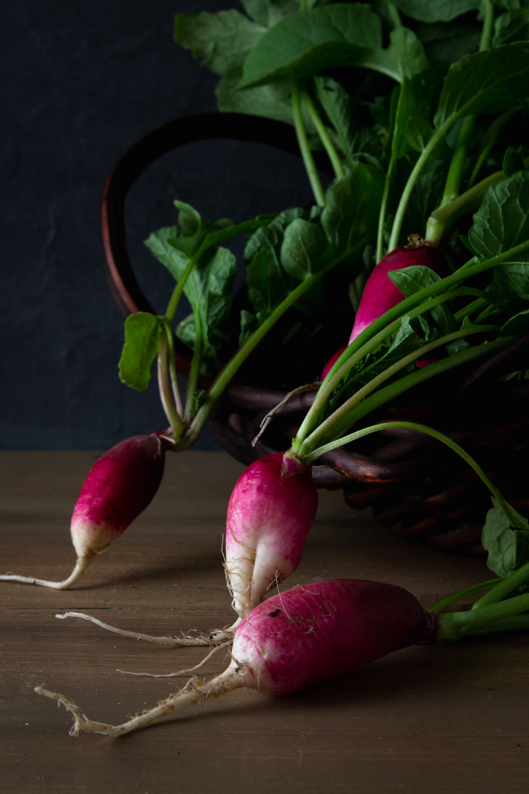

Radish and Butter Toast Sandwich

Description
A simple and elegant way to start the day or keep the fire rolling at lunch. This sandwich has 5 ingredients, and can be made in minutes.
Traditionally a French recipe and is said to be a common sandwich for younger students at school. But don't let your age stop you from trying this!
Ingredients
- 1 bunch radishes
- 2 tbsp salted butter
- 2 slices crusty sourdough bread
- Pinch of Kosher Salt
- Pinch of Black Pepper
Steps
- Slice radishes into 1/4" thick pieces and set aside
- Toast slices of sourdough bread
- Spread butter onto toast
- Place overlapping slices of radishes onto buttered bread
- Add salt and pepper on top of radish slices
- Complete the sandwich with the other piece of toast
- Enjoy!